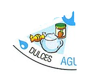
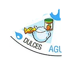
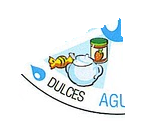
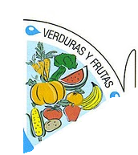
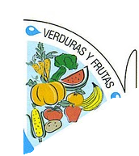

Objetivo: Identificar los grupos de alimentos, las características de cada uno y las diferencias entre ellos.
Materiales:
XO
“Salúdame” instalado en la XO
Rompecabezas
Desarrollo:
Los niños abrirán “Salúdame” e irán a la biblioteca del juego para realizar una lectura comentada sobre la ficha grupos de alimentos, alternando la lectura con el intercambio sobre ejemplos de su vida cotidiana, procuraremos confirmar que comprendan los conceptos.
Al comenzar el juego “Salúdame” en la XO veremos que la barra de alimentación tiene seis grupos de alimentos, cada uno aporta nutrientes y energía, más el agua. Los niños experimentarán probando distintos efectos de los alimentos en el cuerpo. Por ejemplo: harán que el personaje del juego coma cinco tortas fritas y luego cinco frutas para analizar como se mueven las barras en cada caso, y así con otros ejemplos.
¿Cómo se llenan las barras de frutas y verduras? ¿Algo no coincide con la realidad? Para esto explorarán en el juego. (Aquí es importante que noten que se puede llenar la barra sólo con frutas y en la realidad es importante que se consuma tanto frutas como verduras).
¿Cómo se modifican otras barras?
Por ejemplo: Papas chips ¿tienen azúcar? También explorarán cómo cambian las barras con distintos tipos de alimentos.
Los niños sacarán fotos con la XO (en sus casas o en la escuela) a diferentes alimentos. Luego en el aula trabajaremos con cada foto agrupando los alimentos fotografiados de acuerdo a la clasificación que aprendimos en la GABA.
Los niños armarán el puzle que conforma la GABA (anexo) y nombrarán los diferentes alimentos que podemos encontrar en cada pieza.

 
